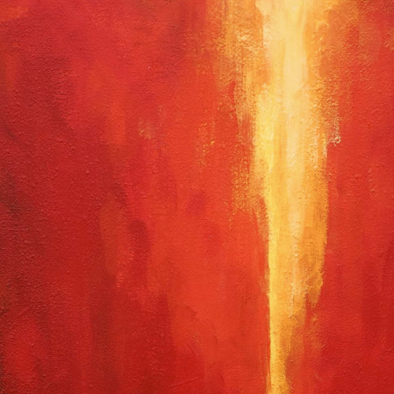
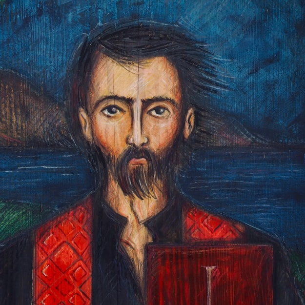
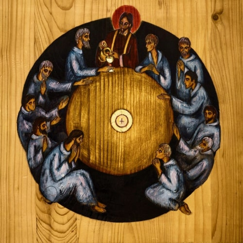
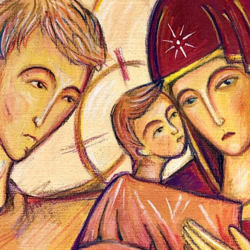

przeczytaj
artykuł
portfolio
.jpg "Duch Boży unosił się ponad wodami (2018)")

.jpg "Rekonwalescencja św. Ignacego (2018)")


.jpg "Bitwa o Pampelunę (2018)")
.jpg "Mandylion (2018)")
.jpg "Stanisław Kostka (2018)")
.jpg "Wywyższenie (2018)")


.jpg "Tajemnica Wielkiej Soboty")
.jpg "Św. Ignacy piszący Konstytucje TJ (2018)")
.jpg "Umycie nóg (2018)")
.jpg "Pokutujący Piotr (2017)")

(1).jpg "Pantokrator (2017)")
.jpg "Igonaid (2017)")
.jpg "Cichy i pokornego serca (2017)")
.jpg "Św. Ignacy piszący Ćwiczenia Duchowe (2016)")
.jpg "Katabasis Zstąpienie (2015)")
.jpg "Otwarcie szóstej pieczęci Ap")
(1).jpg "Ukrzyżowanie (2015)")
.jpg "Cyryl i Nestoriusz na wieczornej przechadzce po całym dniu chrystologicznych dyskusji (2015)")
.jpg "Ukrzyżowanie (2015)")
.jpg "Ostatnia Wieczerza (2013)")
.jpg "Wieczerza w Emmaus (2013)")
.jpg "Panna na ten czas psałterz czytała (2012)")
.jpg "Zwiastowanie (2012)")
.jpg "Piotr Skarga (2011)")
.jpg "Preacher plakat (2011)")
.jpg "Theotokos (2011)")